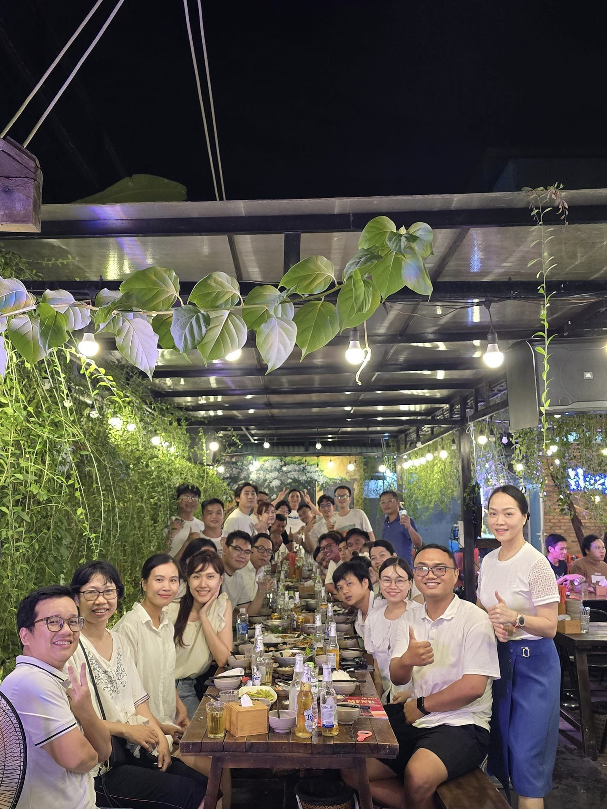

Gametamin — Lifecycle management for games with 500K–1M downloads
Running the lifecycle of live mobile games with 500K–1M downloads — product direction with the CEO and marketing, market analysis, and 10+ sprints of disciplined delivery.

Live games, not launches
Gametamin, a studio under Funtap Games, operates live mobile games — titles with 500K–1M downloads that need continuous improvement: updates, features and live-ops coordinated across Product, Design, Development and Marketing. I managed the lifecycle of these games and the delivery cadence behind it.
Improve what's live, plan what's next, keep it all visible
- Improving games that already have hundreds of thousands of players means every change is a trade-off between retention, monetisation and stability.
- Product direction needed grounding in market analysis, agreed between the CEO, marketing and the delivery team.
- Requirements reached Development with open questions; hand-offs between Product, Design and Development slowed delivery.
- Progress, quality and outcomes across long-running projects were hard to see — planning and management reporting suffered.
Lifecycle owner and delivery lead
- Lifecycle management: owned the improvement roadmap of live games with 500K–1M downloads — what ships, when, and why.
- Product direction & market analysis: worked with the CEO and marketing on positioning and priorities, backed by market analysis.
- Agile delivery: managed 10+ sprints — planning, task allocation and backlog tracking; clarified requirements and resolved blockers across Product, Design and Development.
- Visibility: tracked KPIs and milestones; built KPI & OKR frameworks; supported 6-month and 1-year planning with structured reporting and data analysis for CEO decision-making.
- Pipeline optimisation: redesigned the project pipeline and hand-offs, reducing delivery time by 15%.
Analyse, direct, deliver, measure
Analyse the market
Competitors, trends and player feedback distilled into opportunities for each live title.
Set direction
Priorities agreed with the CEO and marketing; roadmap and release plan per game.
Plan releases
Releases sized into sprints with explicit owners, dependencies and entry/exit criteria per stage.
Run sprints
Sprint planning, task allocation, daily unblocking and requirement clarification before work enters a sprint.
Measure
KPI / OKR tracking of progress, quality and outcomes per game.
Report & plan
Milestone and KPI reporting for management; inputs to 6-month and 1-year plans.
Working documents
Faster, more predictable delivery on live titles
Takeaways
- On a live game, the roadmap is a negotiation between players, marketing and engineering — market analysis is what keeps that negotiation honest.
- Most delays hide in hand-offs, not in the work itself — mapping the pipeline exposed them quickly.
- A small set of KPIs that management actually reads beats a large dashboard nobody opens.
Moments from the project
